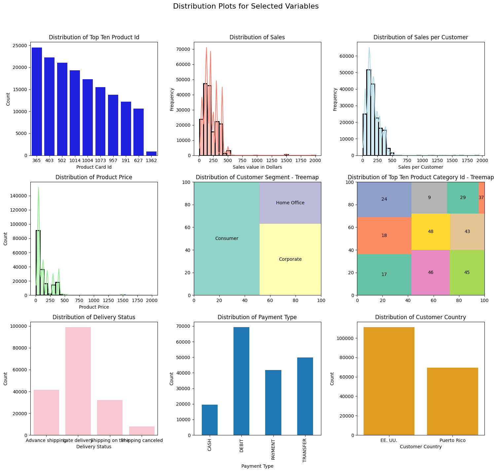
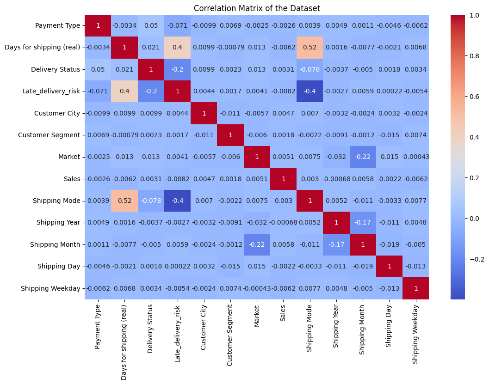
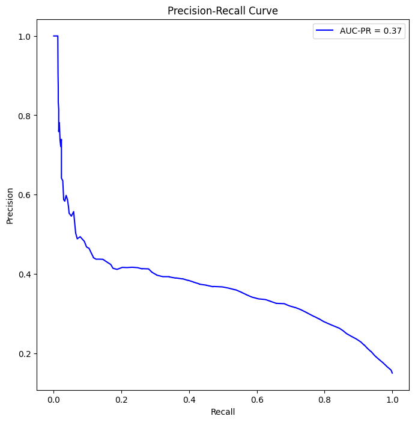

One of the core focus of downstream supply chain operations involves a key responsibility – the ability to navigate the ever-changing landscape of customer demand. Supply chain professionals have adopted statiscal techqniques that ebable them to infer the demand of products based on historical data. This process is relatively straightforward when dealing with smaller product categories and stable demand patterns. However, challenges arise in larger product categories with constantly shifting consumer demands, posing scalability issues for traditional forecasting methods.
The traditional approach involves observing the distribution and variability of historical data from ERP systems, combined with expert intuition. Yet, as businesses grow, reducing guesswork in demand forecasting becomes important. The decisions made in inventory optimization can significantly impact costs.
In this notebook, I will guide you through building a demand forecasting model to predict product demand based on historical data. Moreover, I’ll demonstrate how this model can be leveraged for inventory optimization, covering concepts like reorder points, safety stock, and economic order quantity (EOQ).
Throughout this project, we will address two key business questions:
What is the demand forecast for the top selling product in the next 24 months?
What is the optimal inventory level for the product?
Join me on this exploration as we seek answers, and feel free to share your thoughts and feedback on my approach.
You can find the source code for this project at my github page. You can also find the Jupyter notebook and the dataset on my kaggle page.
Click to Read Executive Summary on Research Findings
Executive Summary
After building and testing the demand forecasting model, we discovered trends, seasonalities and holiday effects on the top-selling product based on the dataset provided we also found the optimal inventory policy for the top-selling product:
Given the zero variance observed in the product price, The Demand for the product Card ID 365 is expected to remain fairly stable within the next two years with cyclical dips in sales within the third quarter of each year(2015 and 2016). it might be worth looking into these top predictors of demand outcomes to control the dips and ultimately improve sales outcomes
Pending
Pending
Pending
Pending
Pending
Pending
Pending
Pending
Pending
Pending
Based on the Economic Order Quantity Model(EOQ) the optimal inventory policy is
Potential Application of Insights
Project Outline
For this project, I completed the following tasks:
Performed Exploratory Data Analysis.
Cleaned and Prepared the data for modeling.
Conducted Time Series Modeling With Prophet.
Evaluated the model performance.
Interpret the model results and answer the business questions.
Problem Statement
Large product categories and constantly shifting consumer demand patterns introduce a scaling challenge for traditional demand forecasting techniques. There is a need for an approach that reduces the level of guesswork and reduces the avoidable costly outcomes of poor inventory optimizations
Project Dependencies
Show the code
# import project librariesimport pandas as pdimport numpy as np # for linear algebraimport math # for math operations import seaborn as sns # for plotting# handling filesimport os import sys # data preprocessingfrom sklearn.preprocessing import LabelEncoderfrom sklearn.model_selection import train_test_split# Model Building and Fittingfrom sklearn.ensemble import RandomForestClassifierfrom prophet import Prophet# Model Evaluation and Tuningfrom sklearn.metrics import accuracy_score, classification_report, confusion_matrix# visualisation librariesimport seaborn as snsimport matplotlib.pyplot as pltimport matplotlib.pyplot as plt # for plottingimport squarify # for tree maps
Exploratory Data Analysis
The working dataset contains entries of customer demand information The data contains 53 features (columns)
To understand the data, I performed exploratory data analysis. I used the following techniques to understand the data:
Visual inspection of data.
Exploratory Data Visualizations. (Univariate and Bivariate)
In this truncated output, you can see The data contains 53 features (columns) and 180,519 entries (rows). The data contains a mix of categorical and numerical features.
You can dive into the details about the description of the dataset here
Initial Data Preprocessing
To Forecast the demand based on the available data, we will focus on historical sales data, and product attributes like; stock level, and product category, we will also analyze the impact of other variables that contribute to demand patterns including geographic factors, customer segments and lead time.
Preprocessing Tasks
Drop irrelevant columns
Drop rows with missing values
Create new features
Convert categorical features to numerical features
Based on the above, we will drop the majority of the columns that are not relevant for forecasting the demand and extract new features from the existing columns
Drop Irrelevant Columns
Code
# drop irrelevant columnsdef drop_columns(df, columns_to_drop):try: df = df.drop(columns=columns_to_drop)print(f"{len(columns_to_drop)} columns dropped successfully. Number of columns remaining: {len(df.columns)}")return dfexceptKeyErroras e:print(f"""Column(s): {e} not found in dataframe. No columns dropped. Please Check that the column names are correct.""")return df# Specify the columns to keepcolums_to_keep = ['Days for shipping (real)', 'Customer Country','Sales per customer','Delivery Status', 'Late_delivery_risk', 'Customer City','Customer Segment','Sales','Shipping Mode','Type', 'Product Card Id','Customer Zipcode', 'Product Category Id', 'Product Name', 'Product Price','Market', 'Product Status','shipping date (DateOrders)',]# Specify the columns to dropcolumns_to_drop = [col for col in df.columns if col notin colums_to_keep ]df = drop_columns(df, columns_to_drop)
35 columns dropped successfully. Number of columns remaining: 18
Create New Features
The dataset contains a shipping date column which is a DateTime object from which we can extract Month, Year, Day and Day of Week that can be useful in our analysis.
Month - to capture the months per sale.
Year - to capture the year per sales.
Day - to capture the day per sales.
Day of Week - to capture the day of the week per sales.
I chose Shipping Date over the Order date because it reflects fulfilled demand while the latter captures interest. (the customer could cancel the order)
# Create month, Year, Day, and Weekday columns from Shipping Datedef extract_date_parts(df, date_column, prefix):try: df[date_column] = pd.to_datetime(df[date_column]) df[f'{prefix} Year'] = df[date_column].dt.year df[f'{prefix} Month'] = df[date_column].dt.month df[f'{prefix} Day'] = df[date_column].dt.day df[f'{prefix} Weekday'] = df[date_column].dt.weekday# verify and notify that the columns have been creatediff'{prefix} Year'in df.columns andf'{prefix} Month'in df.columns andf'{prefix} Day'in df.columns andf'{prefix} Weekday'in df.columns:print(f" Success! Columns Created: {prefix} Year, {prefix} Month, {prefix} Day, and {prefix} Weekday")return dfelse:print("Error creating columns. Please check that the date column name is correct.")exceptExceptionas e:print(f"Error creating columns: {e}")return df# Use the function to extract date partsdf = extract_date_parts(df, 'shipping date (DateOrders)', 'Shipping')
Now we have 22 new columns and 180519 entries (rows) in the dataset.
Drop Rows with Missing Values
# drop customer Zip code.df = df.drop(columns=['Customer Zipcode'])
A Quick Spot Check for Missing Values
### Check for Missing valuesdf.isnull().sum()
Type 0
Days for shipping (real) 0
Sales per customer 0
Delivery Status 0
Late_delivery_risk 0
Customer City 0
Customer Country 0
Customer Segment 0
Market 0
Sales 0
Product Card Id 0
Product Category Id 0
Product Name 0
Product Price 0
Product Status 0
shipping date (DateOrders) 0
Shipping Mode 0
Shipping Year 0
Shipping Month 0
Shipping Day 0
Shipping Weekday 0
dtype: int64
There are currently no null values in the dataset. This is good news!
To explore the spread of the data, we will use the describe() method to get the summary statistics of the data.
df.describe()
Days for shipping (real)
Sales per customer
Late_delivery_risk
Sales
Product Card Id
Product Category Id
Product Price
Product Status
shipping date (DateOrders)
Shipping Year
Shipping Month
Shipping Day
Shipping Weekday
count
180519.000000
180519.000000
180519.000000
180519.000000
180519.000000
180519.000000
180519.000000
180519.0
180519
180519.000000
180519.000000
180519.000000
180519.000000
mean
3.497654
183.107609
0.548291
203.772096
692.509764
31.851451
141.232550
0.0
2016-06-16 05:45:23.202433024
2015.979404
6.252494
15.702170
2.997385
min
0.000000
7.490000
0.000000
9.990000
19.000000
2.000000
9.990000
0.0
2015-01-03 00:00:00
2015.000000
1.000000
1.000000
0.000000
25%
2.000000
104.379997
0.000000
119.980003
403.000000
18.000000
50.000000
0.0
2015-09-25 06:59:00
2015.000000
3.000000
8.000000
1.000000
50%
3.000000
163.990005
1.000000
199.919998
627.000000
29.000000
59.990002
0.0
2016-06-15 08:32:00
2016.000000
6.000000
16.000000
3.000000
75%
5.000000
247.399994
1.000000
299.950012
1004.000000
45.000000
199.990005
0.0
2017-03-04 21:29:00
2017.000000
9.000000
23.000000
5.000000
max
6.000000
1939.989990
1.000000
1999.989990
1363.000000
76.000000
1999.989990
0.0
2018-02-06 22:14:00
2018.000000
12.000000
31.000000
6.000000
std
1.623722
120.043670
0.497664
132.273077
336.446807
15.640064
139.732492
0.0
NaN
0.831962
3.398391
8.808808
2.002633
Some interesting Highlights from The summary statistics
Aproximately 55% of orders had late delivery risks.
Aproximately 75% of products cost $199.99
All the products are available.
75% of customers bought goods worth at least $247.40
Further inspection of the data will help us understand the data better.
In the next step I will use visualizations to bring to life patterns in the data. These patterns will inform decisions around feature engineering and model selection.
Preprocessing Data for Bivariate Analysis and Machine Learning
Some of the variables in the dataset are categorical variables. That presents a challenge because the correlation matrix that will be used for Bivariate analysis requires all variables to have numerical representations.
For future machine learning modeling, I will need to also separately encode the categorical variables using the OneHotEncoder method from the sklearn library.
I wrote a function that returns two preprocessed dataframes: one that is encoded using a label encoder function and the other encoded using one hot encoding technique:
You can learn about encoding techniques for categorical variables here
The categorical variables in the dataset are:
Customer Segment
Payment Type
Delivery Status
Category Name
Customer Country
Exploratory Data Visualizations
To highlight the distributions of the individual variables as well as the relationship between the variables and the target variables, I used the following techniques:
Univariate Analysis
Bivariate Analysis
Exploratory Time Series Analysis
Univariate analysis
My goal for this initial step was to understand the overall distribution of each variable in the dataset. I used the following techniques to achieve this:
distribution plots
tree maps
bar plots
Hopefully, patterns and outliers will emerge from this analysis. I will use these insights to inform my decisions around feature selection and model selection.
Show the code
# Set up the grid layoutfig, axes = plt.subplots(nrows=3, ncols=3, figsize=(15, 15))fig.suptitle('Distribution Plots for Selected Variables', fontsize=16)# Create a copy of the DataFramedf_copy = df.copy()# Plotting the top ten products per Product Card Idsns.countplot(data=df_copy, x='Product Card Id', color='blue', ax=axes[0, 0], order=df_copy['Product Card Id'].value_counts().iloc[:10].index)axes[0, 0].set_title('Distribution of Top Ten Product Id')axes[0, 0].set_xlabel('Product Card Id')axes[0, 0].set_ylabel('Count')# Plotting Value of sales in dollarssns.histplot(data=df_copy, x='Sales', kde=True, color='salmon', bins=30, linewidth=2, ax=axes[0, 1])axes[0, 1].set_title('Distribution of Sales')axes[0, 1].set_xlabel('Sales value in Dollars')axes[0, 1].set_ylabel('Frequency')# Plotting Sales Value per customersns.histplot(data=df_copy, x='Sales per customer', bins=30, kde=True, linewidth=2, color='lightblue', ax=axes[0, 2])axes[0, 2].set_title('Distribution of Sales per Customer')axes[0, 2].set_xlabel('Sales per Customer')axes[0, 2].set_ylabel('Frequency')# Ploting the distribution of Product Pricesns.histplot(data=df_copy, x='Product Price', bins=30, kde=True, color='lightgreen', linewidth=2, ax=axes[1, 0])axes[1, 0].set_title('Distribution of Product Price')axes[1, 0].set_xlabel('Product Price')# ploting a tree map for Customer Segmentsquarify.plot(sizes=df_copy['Customer Segment'].value_counts(), label=df_copy['Customer Segment'].value_counts().index, color=sns.color_palette("Set3"), ax=axes[1, 1])axes[1, 1].set_title('Distribution of Customer Segment - Treemap')# ploting a tree map for Top Ten Product Category Idsquarify.plot(sizes=df_copy['Product Category Id'].value_counts().iloc[:10], label=df_copy['Product Category Id'].value_counts().iloc[:10].index, color=sns.color_palette("Set2"), ax=axes[1, 2])axes[1, 2].set_title('Distribution of Top Ten Product Category Id - Treemap')# Plotting the distribution of Delivery Statussns.countplot(data=df_copy, x='Delivery Status', color='pink', ax=axes[2, 0])axes[2, 0].set_title('Distribution of Delivery Status')axes[2, 0].set_xlabel('Delivery Status')axes[2, 0].set_ylabel('Count')# Plotting the distribution Payment Type with stacked bar chartdf_copy.groupby(['Type'])['Type'].count().plot(kind='bar', stacked=True, ax=axes[2, 1])axes[2, 1].set_title('Distribution of Payment Type')axes[2, 1].set_xlabel('Payment Type')axes[2, 1].set_ylabel('Count')# Plotting the Distribution of top ten Customer Countrysns.countplot(data=df_copy, x='Customer Country', color='orange', ax=axes[2, 2], order=df_copy['Customer Country'].value_counts().iloc[:10].index)axes[2, 2].set_title('Distribution of Customer Country')axes[2, 2].set_xlabel('Customer Country')axes[2, 2].set_ylabel('Count')# Adjust layoutplt.tight_layout(rect=[0, 0.03, 1, 0.95])# Show the plotsplt.show()#| code-fold: true

Click to Read My Observations!
The Top Selling Product ID is 365 which corresponds to a product name: Perfect Fitness Perfect Rip Deck this indicates a fast-moving product. I will focus the demand forecasting process on this product going forward
The distribution of Sales Value and Sales per customer are both positively skewed with a long tail. This indicates that the majority of sales are for low-value products. This is an interesting insight because it may suggest that the majority of customers are price-sensitive.
The distribution of Product Price is also positively skewed with a long tail. This means that the majority of products are low-value products.
The distribution of Customer Segment indicates that the majority of customers are from the consumer segment.
Note: Based on the insight from the univariate analysis, The rest of the analysis and forecasting will focus on the top selling Product Card Id (365 ‘Perfect Fitness Perfect Rip Deck’)
insert image of the top selling product
Show the code
# Select top selling producttop_product = df['Product Card Id'].value_counts().index[0]# get top product IDprint(f"Filtering and Encoding Dataset for Top Product ID: {top_product}")from sklearn.preprocessing import LabelEncoderdef prepare_data(df, product_card_id, categorical_cols, columns_to_drop):""" Prepare a DataFrame for bivariate analysis and machine learning by applying label encoding and one-hot encoding to categorical columns and dropping specified columns. Parameters: df (pandas.DataFrame): The original DataFrame. product_card_id (int): The product card ID to filter the DataFrame on. categorical_cols (list of str): The names of the categorical columns to apply encoding to. columns_to_drop (list of str): The names of the columns to drop from the DataFrame. Returns: pandas.DataFrame: The label encoded DataFrame for bivariate analysis. pandas.DataFrame: The one-hot encoded DataFrame for machine learning. """try: df_copy = df[df['Product Card Id'] == product_card_id].copy() # create a copy# label encoding label_encoder = LabelEncoder() df_label_encoded = df_copy.copy()# Apply label encoding to categorical variables in placefor col in categorical_cols: df_label_encoded[col] = label_encoder.fit_transform(df_label_encoded[col])# Drop specified columns df_label_encoded = df_label_encoded.drop(columns=columns_to_drop)# one-hot encoding df_one_hot_encoded = pd.get_dummies(df_copy, columns=categorical_cols)# Drop specified columns df_one_hot_encoded = df_one_hot_encoded.drop(columns=columns_to_drop)print("Data preparation successful.")return df_one_hot_encoded, df_label_encodedexceptExceptionas e:print(f"Error preparing data: {e}")returnNone, None# Use the function to prepare the data for bivariate analysiscategorical_cols = ['Type', 'Customer Segment', 'Delivery Status', 'Customer City', 'Market','Shipping Mode']columns_to_drop = ['Product Name', 'Customer Country', 'shipping date (DateOrders)', 'Product Card Id', 'Product Category Id', 'Product Status', 'Product Price']# drop columns and encode data for correlation martrix and Machine learningonehot_encode_df, label_encode_df = prepare_data(df, top_product, categorical_cols, columns_to_drop)# rename Type column to Payment Typelabel_encode_df = label_encode_df.rename(columns={'Type': 'Payment Type'})onehot_encode_df = onehot_encode_df.rename(columns={'Type': 'Payment Type'})
Filtering and Encoding Dataset for Top Product ID: 365
Data preparation successful.
Confirm Encoding of Dataset
# validate the data typeslabel_encode_df.dtypes
Payment Type int64
Days for shipping (real) int64
Sales per customer float64
Delivery Status int64
Late_delivery_risk int64
Customer City int64
Customer Segment int64
Market int64
Sales float64
Shipping Mode int64
Shipping Year int32
Shipping Month int32
Shipping Day int32
Shipping Weekday int32
dtype: object
onehot_encode_df.dtypes
Days for shipping (real) int64
Sales per customer float64
Late_delivery_risk int64
Sales float64
Shipping Year int32
...
Market_USCA bool
Shipping Mode_First Class bool
Shipping Mode_Same Day bool
Shipping Mode_Second Class bool
Shipping Mode_Standard Class bool
Length: 590, dtype: object
Exploratory Time Series Analysis
To highlight the trends and seasonality in the sales data, I used the following techniques:
Time Series Heatmaps
Time Series Modeling with Prophet
Time Series HeatMap of The Demand(Sales)
To understand the demand patterns over time, I created a heatmap of the demand over time. This will help us understand the cyclical patterns in the demand for the top selling product
Code
import seaborn as snsimport matplotlib.pyplot as pltimport calendar# extract shipping date (DateOrders) and Sales columnsdf_heatmap = df[['shipping date (DateOrders)', 'Sales']]# Assuming 'df' is your original dataframe# df_heatmap['shipping date (DateOrders)'] = pd.to_datetime(df_heatmap['shipping date (DateOrders)']) # Convert timestamp to datetime if not alreadydf_heatmap.set_index('shipping date (DateOrders)', inplace=True)resampled_df = df_heatmap.resample('M').sum() # Resample to yearly frequency# Set x-axis ticks to represent months and yearsmonth_labels = [calendar.month_abbr[m.month] +'-'+str(m.year) for m in resampled_df.index]# Plot the heatmapplt.figure(figsize=(18, 5))sns.heatmap(resampled_df.T, cmap='YlGnBu', cbar_kws={'label': 'Sales'})plt.xticks(ticks=range(len(month_labels)), labels=month_labels, rotation=80, ha='right')plt.title('Time Series Heatmap of Sales (Aggregated by Month)')plt.xlabel('Month and Year')plt.show()
Judging from consitency in the shades of the heatmap, we can see that the demand for the top-selling product is fairly stable over time. However, it is interesting to note that the amount of sales recorded for first quarters of 2015, 2016 and 2017 remained consistent however in 2018 the amount of sales recorded in the first quarter dipped significantly. This is an interesting insight that we can explore further.
Next, I will use the Prophet library to model the demand for the top-selling product. This will help us understand the cyclical patterns in the demand for the top-selling product
Forecasting Demand of the Top-selling Product with Prophet
Prophet is a forecasting tool developed by Facebook. It is designed for analyzing time series data that display patterns on different time scales such as yearly, weekly, and daily. It also has advanced capabilities for modeling the effects of holidays on a time-series and implementing custom seasonalities. see the documentation here
Code
# import prophetfrom prophet import Prophetprophet_df = df.copy()prophet_df = prophet_df.rename(columns={'shipping date (DateOrders)': 'ds', 'Sales': 'y'})# Add custom Puerto Rico holidays# Read the CSV fileholidays_df = pd.read_csv('data/puertorican_holidays.csv')# Rename the 'Date' column to 'ds' and the 'Name' column to 'holiday'holidays_df = holidays_df.rename(columns={'Date': 'ds', 'Name': 'holiday'})# Drop the 'Type' column as it's not neededholidays_df = holidays_df.drop(columns=['Type'])# Add 'lower_window' and 'upper_window' columnsholidays_df['lower_window'] =0holidays_df['upper_window'] =1# Convert 'ds' to datetimeholidays_df['ds'] = pd.to_datetime(holidays_df['ds'])# Create a Prophet instance and provide the holidays DataFrameprophet = Prophet(holidays=holidays_df)prophet.fit(prophet_df)# Create a DataFrame with future dates for forecastingfuture = prophet.make_future_dataframe(periods=365, freq='D')# Generate forecastsforecast = prophet.predict(future)
08:16:49 - cmdstanpy - INFO - Chain [1] start processing
08:42:00 - cmdstanpy - INFO - Chain [1] done processing
The code above uses the Prophet library to model the demand for the top-selling product. The model is trained on the Sales and Shipping Date columns. The model is then used to forecast the demand for the top-selling product over the next 365 days.
The code also included Puerto Rican holidays to account for the impact of holidays on the demand for the top-selling product. This is important because holidays can have a significant impact on demand patterns.
You might wonder why Puerto Rican holidays were included in the model. From the univariate analysis conducted earlier, we discovered that most of the orders were coming from Puerto Rico. The forecast variable now contains the forecasted values for the top-selling product. we will work with the variable later but for now, let’s evaluate the accuracy of our prophet model
Evaluating the Accuracy of the Time Series Forecast
To determine the accuracy of the prophet model, we will use the cross_validationa() function provided by Prophet
08:41:21 - cmdstanpy - INFO - Chain [1] start processing
08:46:10 - cmdstanpy - INFO - Chain [1] done processing
The cross_validation() function performs cross-validation on the model. It trains the model on a subset of the data and then evaluates the model on the remaining data. This is a good way to evaluate the accuracy of the model. The initial parameter specifies the size of the training set. The period parameter specifies the frequency of the forecast.
Let’s visualize the performance of the model
# Plot MAPEfrom prophet.plot import plot_cross_validation_metricfig = plot_cross_validation_metric(df_cv, metric='mape')fig.get_axes()[0].get_lines()[0].set_markerfacecolor('#ADD8E7') # Change color of the dotsfig.get_axes()[0].get_lines()[0].set_markeredgecolor('#ADD8E7') # Change color of the dot edges
The forecast has lower MAPE (Mean Absolute Percentage Error) values for horizons within the 200-day range however the accuracy drops for horizons beyond 250 days. This suggests that the model is making more errors at periods beyond 250 days.
The model will be most useful to stakeholders if it can forecast demand beyond 250 days with a lower percentage of errors. Exposing the model to more historical data may help lower the MAPE significantly. nonetheless, let’s explore if there are opportunities to improve the accuracy by finding the best combinations of hyperparameters for the prophet model. I will use a hyperparameter tuning technique to try to optimize the model’s performance.
Finding the Best Hyperparameter Combination for Lower MAPE
from sklearn.model_selection import ParameterGrid# Assuming prophet_df is your DataFrame with 'ds' and 'y' columnsprophet_df = df.copy()prophet_df = prophet_df.rename(columns={'shipping date (DateOrders)': 'ds', 'Sales': 'y'})# Specify hyperparameter values to tryparam_grid = {'seasonality_mode': ["additive", 'multiplicative'],'seasonality_prior_scale': [1, 5, 10, 20],'holidays_prior_scale': [5, 10, 20, 25],'changepoint_prior_scale': [0.005, 0.01, 0.05, 0.1]}# Generate all combinations of hyperparameters using ParameterGridparam_combinations = ParameterGrid(param_grid)
The code above uses the ParameterGrid function from the sklearn library to create a grid of hyperparameters. The grid contains different combinations of hyperparameters for the prophet model.
The code below then uses the cross_validation() function to evaluate the accuracy of the model for each combination of hyperparameters. The code then selects the combination of hyperparameters that results in the lowest MAPE.
from itertools import product# Store results in a dictionaryresults = {}print(f"trying all {len(param_combinations)} hyperparameter combinations")# Generate all combinations of hyperparametersparam_combinations =list(product(*param_grid.values()))for params in param_combinations:# Create a Prophet instance with current hyperparameter values prophet = Prophet(**dict(zip(param_grid.keys(), params)))# Fit the model prophet.fit(prophet_df)# Perform cross-validation df_cv = cross_validation(model=prophet, initial='730 days', period='365 days', horizon='365 days')# Calculate performance metrics df_metrics = performance_metrics(df_cv, rolling_window=0)# Store metrics in the results dictionary results[params] = df_metrics['mape'].mean()
:::: {.callout .note} Note: The code took a very long time to complete. It tried 128 different combinations of hyperparameters and the best model was the one with the lowest MAPE value. The best model had the following hyperparameters:
::::
The results are in! The best model had the following hyperparameters:
# Find the hyperparameters with the lowest RMSEbest_hyperparams =min(results, key=results.get)print(f"Best Hyperparameters: {dict(zip(param_grid.keys(), best_hyperparams))}")
Best Hyperparameters: {'seasonality_mode': 'additive', 'seasonality_prior_scale': 1, 'holidays_prior_scale': 5, 'changepoint_prior_scale': 0.005}
Now let’s rebuild the model with the best hyperparameters and evaluate the model’s performance.
tuned_prophet = Prophet(holidays=holidays_df, seasonality_mode='additive', seasonality_prior_scale=1, holidays_prior_scale=5, changepoint_prior_scale=0.005)# fit the modeltuned_prophet.fit(prophet_df)# Create a DataFrame with future dates for forecastingfuture = tuned_prophet.make_future_dataframe(periods=365, freq='D')# Generate forecastsnew_forecast = tuned_prophet.predict(future)
09:06:40 - cmdstanpy - INFO - Chain [1] start processing
09:19:32 - cmdstanpy - INFO - Chain [1] done processing
09:23:58 - cmdstanpy - INFO - Chain [1] start processing
09:26:52 - cmdstanpy - INFO - Chain [1] done processing
let’s compare the accuracy of the model before and after hyperparameter tuning. Drumroll please!
Code
fig, axs = plt.subplots(1, 2, figsize=(15, 5))# Plot the first cross-validation metricfig1 = plot_cross_validation_metric(df_cv, metric='mape', ax=axs[0])fig1.get_axes()[0].get_lines()[0].set_markerfacecolor('#ADD8E7') # Change color of the dotsfig1.get_axes()[0].get_lines()[0].set_markeredgecolor('#ADD8E7') # Change color of the dot edges# add titleaxs[0].set_title('Initial Cross-Validation score MAPE')# Plot the second cross-validation metricfig2 = plot_cross_validation_metric(tuned_df_cv, metric='mape', ax=axs[1])fig2.get_axes()[0].get_lines()[0].set_markerfacecolor('#ADD8E7') # Change color of the dotsfig2.get_axes()[0].get_lines()[0].set_markeredgecolor('#ADD8E9') # Change color of the dot edges# add titleaxs[1].set_title('Tuned Cross-Validation score MAPE')plt.tight_layout()plt.show()
Not Exactly the outcome I was expecting but the tuned model’s performance remains consistent with the previous model. This is may suggest that the model is not sensitive to the hyperparameters. Nonetheless, the model is still useful for forecasting demand for the top-selling product.
Forecast Results
As indicated earlier, the forecast variable contains the forecasted values of our Sales time series. Based on this forecast we will calculate the optimal inventory policy for this specific product.
The forecast variable is a dataframe that contains the following columns:
forecast.head(2)
ds
trend
yhat_lower
yhat_upper
trend_lower
trend_upper
American Citizenship Day
American Citizenship Day_lower
American Citizenship Day_upper
Christmas Day
...
weekly
weekly_lower
weekly_upper
yearly
yearly_lower
yearly_upper
multiplicative_terms
multiplicative_terms_lower
multiplicative_terms_upper
yhat
0
2015-01-03 00:00:00
189.503452
61.858391
396.408660
189.503452
189.503452
0.0
0.0
0.0
0.0
...
-1.288207
-1.288207
-1.288207
33.801001
33.801001
33.801001
0.0
0.0
0.0
220.974183
1
2015-01-03 03:30:00
189.646216
57.050118
384.288236
189.646216
189.646216
0.0
0.0
0.0
0.0
...
-1.373629
-1.373629
-1.373629
33.618634
33.618634
33.618634
0.0
0.0
0.0
221.460580
2 rows × 73 columns
Before calculating the optimal inventory policy, let’s visualize the forecasted sales data. To have a feel for the seasonalities and cycles in the forecasted sales data
Visualizing Forecasted Sales
Code
import warnings# Ignore the specific FutureWarningwarnings.filterwarnings("ignore", category=FutureWarning)# Plot the forecasttuned_prophet.plot_components(new_forecast)
Forecast Observations
The sales trend between 2015 and 2017 marks a cycle where sales for the product remained relatively stable during the second and third quarters of each year and then dipped slightly in October with a sharp increase between November and December.
The zero variance observed in the product price may account for the relatively stable sales pattern forecasted for 2018 and 2019. It might also be worth investigating the factors that may account for the cyclical dips between 2015 and 2017
We can also observe the impact of the Puerto Rican holidays on the forecasted sales.
Optimizing Inventory Policy Based on Forecasted Demand
Now that we have forecasted the demand for the top-selling product, we can use the forecasted demand to calculate the optimal inventory policy for the product. The optimal inventory policy will help us determine the reorder point, safety stock, and economic order quantity for the product. This will help us ensure that we have the right amount of inventory on hand to meet customer demand while minimizing inventory costs.
Bivariate Analysis Using Heat Maps
My goal for this step was to understand the relationship between each variable and the Sales.
Considering that there are many variables, I decided to use heatmaps to visualize the correlation coefficients between each variable and the target variable because it allowed me to visualize the correlation between each variable and the target variable in one plot. This is a very efficient way to visualize the correlation between variables.
We need to remove the Sales per customer column from the dataset because it introduces collinearity in the correlation matrix. The Sale per customer is similar to the Sales column.
Collinearity is a statistical phenomenon in which two or more predictor variables in a multiple regression model are highly correlated, meaning that one can be linearly predicted from the others with a substantial degree of accuracy. This affects our ability to interpret the model results more accurately. </p.
label_encode_df.drop(columns=['Sales per customer'], inplace=True)
# Perform bivariate analysis using heatmapplt.figure(figsize=(12, 8))sns.heatmap(label_encode_df.corr(), annot=True, cmap='coolwarm')plt.title('Correlation Matrix of the Dataset')# Show the plotplt.show()

From the heatmap, we can see that the variables have a weak linear relationship with the target variable(Sales)
We will use Machine Learning models to capture more complex relationships between the variables and the target variable
Demand Prediction With Machine Learning Using Linear Regressor and Random Forest Models
The Random Forest algorithm was chosen because apart from being a powerful and robust algorithm, it is also an ensemble learning method for classification and regression. It works by constructing a multitude of decision trees at training time and outputs the class that is the mode of the classes or mean prediction of the individual trees. It is a supervised learning algorithm that is used for both classification and regression problems.
The Linear Regressor Model, on the other hand, was chosen because it is a learning algorithm that is based on the idea that there exists a linear relationship between the dependent variable and the independent variables. It is a supervised learning algorithm that is used to predict real-valued output. It works by fitting a linear equation to the observed data.
The two models will be trained on the same dataset and their performance will be compared to determine the best model for the task.
Before model fitting let’s confirm that the categorical variables have been successfully one-hot encoded.
onehot_encode_df.head()
Days for shipping (real)
Sales per customer
Late_delivery_risk
Sales
Shipping Year
Shipping Month
Shipping Day
Shipping Weekday
Type_CASH
Type_DEBIT
...
Customer City_Zanesville
Market_Africa
Market_Europe
Market_LATAM
Market_Pacific Asia
Market_USCA
Shipping Mode_First Class
Shipping Mode_Same Day
Shipping Mode_Second Class
Shipping Mode_Standard Class
48
5
115.180000
1
119.980003
2016
2
29
0
False
False
...
False
False
False
False
True
False
False
False
True
False
57
6
117.580002
1
119.980003
2016
4
19
1
False
False
...
False
False
False
False
False
True
False
False
True
False
58
4
95.980003
1
119.980003
2016
5
26
3
False
False
...
False
False
False
False
False
True
False
False
True
False
66
4
176.369995
1
179.970001
2015
9
26
5
False
False
...
False
False
True
False
False
False
False
False
True
False
67
2
167.369995
0
179.970001
2017
7
4
1
False
False
...
False
False
True
False
False
False
False
False
True
False
5 rows × 590 columns
Split Data for Training and Testing
The next step is to split the data into training and testing datasets. I used the train_test_split() method from the sklearn.model_selection module to split the data into training and testing datasets. Doing so will allow me to train the model on the training dataset and test the model on the testing dataset.
from sklearn.model_selection import train_test_splitX = onehot_encode_df.drop('Sales', axis=1) # exclude the target variable)y = onehot_encode_df['Sales'] # Target variable# Split the dataset into trainig and testing setsX_train, X_test, y_train, y_test = train_test_split( X, y, test_size=0.2)
X: the features to be used for training the model. In this case, the features are all the columns in the dataset except the target variable Sales.
y: the target variable to be predicted. In this case, the target variable is Sales.
X_train: the features to be used for training the models.
X_test: the features to be used for testing the models on unseen data.
y_train: the target variable to be used for training the model.
y_test: the target variable to be used for testing the model.
Training the Model
Now that the data has been successfully preprocessed, I can proceed to train the model. I used the RandomForestRegressor() class from the sklearn.ensemble module to train the model. The RandomForestClassifier() method takes the following arguments:
n_estimators: the number of trees in the forest. I set this to 200.
max_depth: the maximum depth of the tree. I set this to 15.
random_state: the seed used by the random number generator. I set this to 42.
Random Forest Algorithm
from sklearn.ensemble import RandomForestRegressorn_estimators =200max_depth =15# or a specific value# Create the RandomForestClassifier instancerf_model = RandomForestRegressor( n_estimators=n_estimators, max_depth=max_depth, random_state=42# You can set a random state for reproducibility)# Fit the model to the training datarf_model.fit(X_train, y_train)
In a Jupyter environment, please rerun this cell to show the HTML representation or trust the notebook. On GitHub, the HTML representation is unable to render, please try loading this page with nbviewer.org.
from sklearn.linear_model import LinearRegressionlr_model = LinearRegression()lr_model.fit(X_train, y_train)
LinearRegression()
In a Jupyter environment, please rerun this cell to show the HTML representation or trust the notebook. On GitHub, the HTML representation is unable to render, please try loading this page with nbviewer.org.
LinearRegression()
Evaluating the Models
Now that the Linear Regression and Random forest Regressor models have been trained, I can proceed to evaluate each model.
I used the Root Mean Squared Error(RSME) Metric to evaluate each model. This metric measures …. the lowest of the two RMSEs indicates the best model to select the value the better.
from sklearn.metrics import mean_squared_error# Make predictions on the test setrf_prediction = rf_model.predict(X_test)lr_prediction = lr_model.predict(X_test)# Evaluate the modelrf_mse = mean_squared_error(y_test, rf_prediction)lr_mse = mean_squared_error(y_test, lr_prediction)print(f"Root Mean Squared Error for Random Forest Regressor: {rf_mse}")print(f"Root Mean Squared Error for Linear Regression: {lr_mse}")
Root Mean Squared Error for Random Forest Regressor: 43.300144790077574
Root Mean Squared Error for Linear Regression: 246.42162579180308
It is clear from the RSME scores that the Random Forest Regressor Model is far more superior for our use case.
Accuracy Score
Based on the test results:
The accuracy is 84.96%, indicating the overall proportion of correct predictions.
The precision, recall, and F1-score for class 0 (booking not completed) are relatively high, suggesting good performance in predicting this class.
The model struggles with class 1 (booking completed), as indicated by lower precision, recall, and F1-score.
The class 1 recall is particularly low (0.18), indicating that the model is not capturing a significant portion of actual positive instances. This is a significant issue because the goal is to predict booking completions. The model is not performing well in this regard.
The reason for this is the class imbalance, recall that from the univariate analysis the majority of booking_complete is 0 indicating that the majority of customers do not complete the booking. The model is biased towards predicting 0 because of the class imbalance. This is a very important insight because it informs the next steps in the project.
Improving the Model
Now that I have a baseline model, I can proceed to improve the model. I used the following techniques to improve the model:
Resolving the class imbalance.
Hyperparameter tuning.
Resolving the Class Imbalance
I implemented oversampling the class 1(booking complete) using the Synthetic Minority Over-sampling Technique (SMOTE), which is a popular technique for oversampling imbalanced datasets. I used the SMOTE() method from the imblearn.over_sampling module to oversample the minority class.
# Apply SMOTE to the training setfrom imblearn.over_sampling import SMOTEsmote = SMOTE(random_state=42)X_resampled, y_resampled = smote.fit_resample(X_train, y_train)# Create and train the RandomForestClassifier on the resampled datarf_model = RandomForestClassifier(n_estimators=100, random_state=42)rf_model.fit(X_resampled, y_resampled)# Make predictions on the test sety_pred = rf_model.predict(X_test)
ValueError: Unknown label type: continuous. Maybe you are trying to fit a classifier, which expects discrete classes on a regression target with continuous values.
Re-Evaluating the Model
Now that the model has been trained with oversampled data, I can proceed to re-evaluate the model. I used the accuracy_score()classification_report() and confusion_matrix() methods to evaluate the model.
The recall for class 1 has increased from 0.16 to 0.22, indicating an improvement in capturing actual positive instances of booking completions
Improving Overall Accuracy With Hyperparameter Tuning
Now that the model has been trained with oversampled data, I can proceed to improve the model. I used the following techniques to improve the model with hyperparameter Tuning
Hyperparameter tuning is the process of finding the best combination of hyperparameters for a machine learning algorithm that results in the best performance. Hyperparameters are variables that are set before training a model. They control the learning process and the resulting model.
The Random Forest algorithm has several hyperparameters that can be tuned to improve the model’s performance. I used the HalvingGridSearchCV() method from the sklearn.model_selection module to tune the hyperparameters. I opted for the HalvingGridsearch method because it’s relatively faster compared to the traditional GridSearch method
Show the code
from sklearn.experimental import enable_halving_search_cv # noqafrom sklearn.model_selection import HalvingGridSearchCV# Define the parameter grid to searchparam_grid = {'n_estimators': [50, 100, 150],'max_depth': [None, 10, 20],'min_samples_split': [2, 5, 10],'min_samples_leaf': [1, 2, 4],'max_features': ['sqrt', 'log2']}# Create a RandomForestClassifierrf_model = RandomForestClassifier(random_state=42)# Create HalvingGridSearchCV objecthalving_search = HalvingGridSearchCV( estimator=rf_model, param_grid=param_grid, cv=5, scoring='accuracy', factor=3)# Fit the model to the datahalving_search.fit(X_resampled, y_resampled)# Get the best parametersbest_params = halving_search.best_params_print("Best Hyperparameters:", best_params)
# Apply SMOTE to the training setfrom imblearn.over_sampling import SMOTEsmote = SMOTE(random_state=42)X_resampled, y_resampled = smote.fit_resample(X_train, y_train)# Create and train the RandomForestClassifier on the resampled datarf_model = RandomForestClassifier(max_depth=None, max_features='sqrt', min_samples_leaf=1, min_samples_split=2, n_estimators=100, random_state=42)rf_model.fit(X_resampled, y_resampled)# Make predictions on the test sety_pred = rf_model.predict(X_test)
Re-Evaluating the Model
Now that the model has been trained with the best parameters, I can proceed to re-evaluate the model. like before, I tested the accuracy, and confusion matrix and created a report
I also further tested with AUROC metric to check the performance of the model given the heavy class imbalance observed
Considering the class imbalance, I decided to use the AUROC metric to evaluate the model. The AUROC metric is a popular metric for evaluating classification models with imbalanced classes. I used the roc_auc_score() method from the sklearn.metrics module to evaluate the model.
Show the code
from sklearn.metrics import precision_recall_curve, auc# Predict probabilities for positive class (class 1)probas_pred = rf_model.predict_proba(X_test)[:, 1]# Compute precision-recall curve and AUC-PRprecision, recall, _ = precision_recall_curve(y_test, probas_pred)area_under_pr_curve = auc(recall, precision)# Plot Precision-Recall curveplt.figure(figsize=(8, 8))plt.plot(recall, precision, label=f'AUC-PR = {area_under_pr_curve:.2f}', color='blue')plt.xlabel('Recall')plt.ylabel('Precision')plt.title('Precision-Recall Curve')plt.legend(loc='best')plt.show()print(f'Area Under the Precision-Recall Curve (AUC-PR): {area_under_pr_curve:.2f}')

Area Under the Precision-Recall Curve (AUC-PR): 0.37
Answering The Business Question With The Predictive Model
Now that I have a predictive model tuned and tested, I can proceed to answer the business question.
The Goal of the project is to help British Airwyays understand their customer’s booking behaviour for the holidays by looking at 5000 records of customer fligt booking data. Through the predictive model, we can answer the following business questions:
1. What Variables Contribute to Customers Booking Holidays With British Airways
2. Is It Viable To Use The Data to Predict Customers Booking Holidays With British Airways
Based on the predictive model, we can find out about the variables that have the most significant impact on booking completions
Finding The Most Important Variables
Show the code
# Extract feature importances from the trained modelfeature_importances = rf_model.feature_importances_# Create a DataFrame with feature names and their importancefeature_importance_df = pd.DataFrame({'Feature': X_train.columns, 'Importance': feature_importances})# Sort the data frame by importance in descending orderfeature_importance_df = feature_importance_df.sort_values(by='Importance', ascending=False)# Select the top 10 featurestop_10_features = feature_importance_df.head(10)# Plot the feature importances for the top 10 featuresplt.figure(figsize=(12, 8))plt.barh(top_10_features['Feature'], top_10_features['Importance'])plt.xlabel('Importance')plt.title('Top 10 Feature Importances')plt.show()# Display the sorted feature importances for the top 10 featuresprint(top_10_features)
It can be seen from the above plot the top ten(10) most important variables that contribute to customers booking holidays with British Airways
Viability for Use in Making Predictions
The model was trained on 5000 records of customer flight booking data. The model was tested on 5000 records of customer flight booking data. The model was able to predict booking completions with 83.7% Accuracy.
However, The model has room for improvement. More data can be collected, particularly data on the customers who completed the booking. This will help to improve the model’s performance significantly. Other techniques include the ensemble approach to learning, which involves combining multiple models to improve the model’s performance.
overall the model is viable for use in making predictions.
Conclusion
In this notebook, I demonstrated my data science process for building a predictive model based on customer flight booking data. I performed exploratory data analysis, cleaned and prepared the data for modeling, performed feature engineering, built and evaluated models, tested the model on unseen data, and interpreted the model results to answer the business questions.
Through the predictive model, we can answer the following business questions:
What Variables Contribute to Customers Booking Holidays With British Airways?
Is It Viable To Use The Data to Predict Customers Booking Holidays With British Airways?
With insights from the predictive model, British Airways’ sales and marketing function can deploy their strategy to flight origins like Malaysia, Australia, Indonesia and China to increase their sales and revenue. They can also experiment with promotional incentives around flight duration, purchase lead and length of stay.
Logistics and Supply Chain function can use the predictive model to forecast the demand for flights during holiday seasons based on historical booking patterns. This can enable the team to Adjust inventory levels and allocate resources more efficiently in response to predicted demand.
If you made it this far, Thank you for reading this notebook. I hope you found it insightful. Please feel free to reach out with comments and feedback on my process.(simontagbor360@gmail.com)